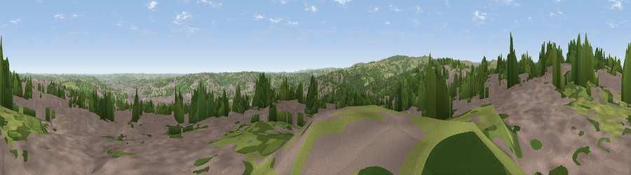

Viewpoint near Sheffield
#11490 in England · top 11% of its area beats it · near SheffieldThe view, rendered

A 360° render of this exact spot computed from the terrain model, tree cover and land cover — summer colours, afternoon light, calibrated against photographs of famous viewpoints. Real trees, hedges and buildings will differ in detail.
The panorama
Grey silhouette: terrain skyline in each direction (720 bearings, Earth curvature and refraction included). Dashed green: skyline with trees (+15 m) and buildings (+8 m) as obstacles. Blue strip: how far the ground is visible on each bearing.
Where the view opens
Wedge length = distance to the farthest visible ground on that bearing (vegetation-aware). Rings at 10, 25 and 50 km.
What fills the view
50% built-up · 35% woodland · 13% grassland · 1% cropland
Angular shares of the visible panorama (visual magnitude), not map area. Landscape diversity 0.45 (0–1 Shannon).
Key numbers
More beautiful places nearby
The staircase of upgrades: each row has a higher view potential than everything closer. Driving times are estimates from straight-line distance, calibrated against real road routing — check an actual route before setting out.
| Place | Direction | Drive | Score |
|---|---|---|---|
| Viewpoint near Ringinglow | SW · 4 km | ~10 min | 66.4 |
| Viewpoint near Oughtibridge | N · 6 km | ~13 min | 68.4 |
| Viewpoint near Oughtibridge | N · 7 km | ~14 min | 72.5 |
| Viewpoint near Wharncliffe Side | N · 9 km | ~18 min | 75.2 |
| Wild Bank | WNW · 35 km | ~54 min | 76.2 |
| Viewpoint near Carrbrook | WNW · 36 km | ~54 min | 77.1 |
| Viewpoint near Mow Cop | WSW · 55 km | ~77 min | 78.9 |
| Viewpoint near Mow Cop | WSW · 55 km | ~77 min | 80.2 |
53.37998, -1.51328 · source: screening · position refined by local search. Computed location — check access rights before visiting.